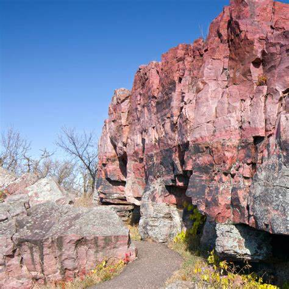

About Gooseberry Falls State Park

Gooseberry Falls State Park, located on the North Shore of Lake Superior in Minnesota, is a spectacular destination known for its stunning waterfalls, rugged landscapes, and diverse rock formations. The park's dramatic scenery and rich geological history make it a popular spot for outdoor enthusiasts, rockhounds, and nature lovers.
The park's history dates back thousands of years, with evidence of ancient human habitation. The falls and surrounding areas were shaped by glacial movements, creating a unique environment that is home to a variety of minerals and rock formations. Today, visitors come to Gooseberry Falls State Park to enjoy its natural beauty, explore its trails, and discover its geological treasures.
Gooseberry Falls State Park features several impressive waterfalls, dense forests, and rocky cliffs. Visitors to the park can expect to discover a wide variety of rocks and minerals, including agates, thomsonite, and even fossils. The Gooseberry River, which runs through the park, offers stunning views and opportunities for rockhounding and gem collecting along its banks. The thrill of finding these geological treasures, combined with the stunning natural scenery, makes Gooseberry Falls State Park a cherished spot for rockhounding adventures.

What Can Be Found at Gooseberry Falls State Park
At Gooseberry Falls State Park, enthusiasts can find a variety of unique geological treasures, including:
- Agates: These beautiful stones, often banded in striking patterns, are a primary attraction for collectors. They range in color from deep reds to vibrant oranges and whites.
- Thomsonite: This rare zeolite mineral forms delicate, needle-like crystals, often in shades of white, pink, or green.
- Basalt: Commonly found along the park's rocky shores, basalt provides a glimpse into the volcanic history of the region.
- Granite: Large deposits of granite are scattered throughout the park, showcasing the area's diverse geological past.
- Other Minerals: Additional finds may include jasper, calcite, and even small amounts of copper.

Location of Gooseberry Falls State Park
Gooseberry Falls State Park is located in northeastern Minnesota, along the scenic North Shore of Lake Superior. The park's coordinates are approximately 47.1344° N, 91.4419° W. The area is accessible via State Highway 61, which runs along the North Shore, providing stunning views and numerous access points to the park.
The surrounding landscape features dense forests, rugged cliffs, and serene riverbanks, providing a perfect backdrop for exploration and discovery. Visitors are encouraged to respect the natural environment and adhere to local regulations while enjoying their time at the park.
Recommended Gear and Tips
When visiting Gooseberry Falls State Park, it's essential to come prepared. Here are some recommendations for your trip:
- Weather Preparedness: The weather along the North Shore can be unpredictable, so pack layers of clothing and be prepared for rain or shine.
- Essentials: Bring plenty of water, snacks, and sun protection, as well as insect repellent, especially during the warmer months.
- Safety Gear: Wear sturdy shoes and protective gloves to prevent injuries from sharp rocks and tools.
- Tools: Carry tools such as rock hammers, chisels, and safety glasses to safely extract and handle the minerals you find.
Rockhounding Tips for Gooseberry Falls State Park
- Explore the Riverbed: The Gooseberry River and its tributaries are prime spots for finding agates and other water-worn stones.
- Shoreline Exploration: Focus your search along the riverbanks where water flow has exposed new materials.
- Look for Distinctive Colors: Gems like agates have distinctive colors that stand out from the surrounding rocks.
- Creek Beds: Pay attention to creek beds where water flow exposes gems embedded in the gravel and sand.
- Respect Park Regulations: Stay on designated trails and avoid disturbing vegetation or wildlife. Do not collect rocks or minerals from within the falls or other protected areas.
Before you start digging, research the types of minerals and rocks you can find in the area. Some locations may require special permits or permissions, especially on public lands. Check with the local ranger station or land management agency for regulations and guidelines.
Much of the land around Gooseberry Falls State Park is publicly owned. Always obtain permission before entering private property to search for rocks and minerals.
While the area around Gooseberry Falls State Park is known for its abundance of agates, basalt, and other gemstones, visitors can find a variety of other natural and historical attractions, including stunning views of the surrounding forests and cliffs, opportunities to view wildlife such as moose, deer, and eagles. Fishing, hiking, camping, and picnicking are all popular activities at Gooseberry Falls State Park.

Recommended Gear


Other Dig Sites in Minnesota
Minnesota is a treasure trove for rockhounding, offering a diverse range of geological landscapes and mineral deposits. Here are some other recommended sites:
Lake Superior

Lake Superior, located near Gooseberry Falls State Park, is famous for its stunning vistas and diverse rock formations, making it a must-visit for collectors.
Pipestone National Monument
Discover the history of pipestone, a soft red stone used by Native Americans for carving ceremonial pipes, at Pipestone National Monument.
Jay Cooke State Park

Jay Cooke State Park is celebrated for its rugged terrain and rich deposits of various minerals, attracting collectors from all over.
Guide Books for Rockhounding in Minnesota
For those seeking more in-depth information and detailed directions to various rockhounding sites in Minnesota, several excellent guidebooks are available.
View Here >>